Changes in PRIMAP-hist v2.5.1_final compared to v2.5_final for Saudi Arabia
2024-02-29
Johannes Gütschow
Change analysis for Saudi Arabia for PRIMAP-hist v2.5.1_final compared to v2.5_final
Overview over emissions by sector and gas
The following figures show the aggregate national total emissions excluding LULUCF AR6GWP100 for the country reported priority scenario. The dotted linesshow the v2.5_final data.
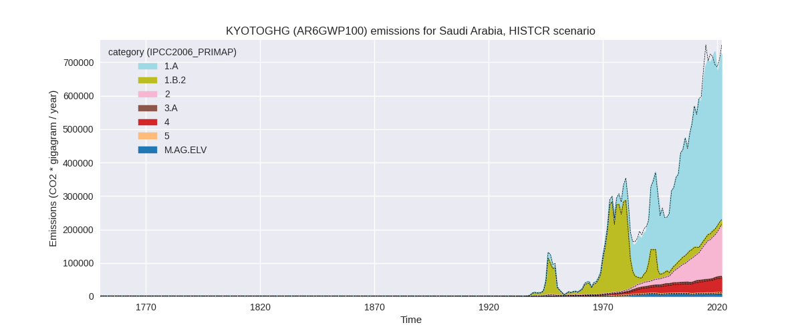
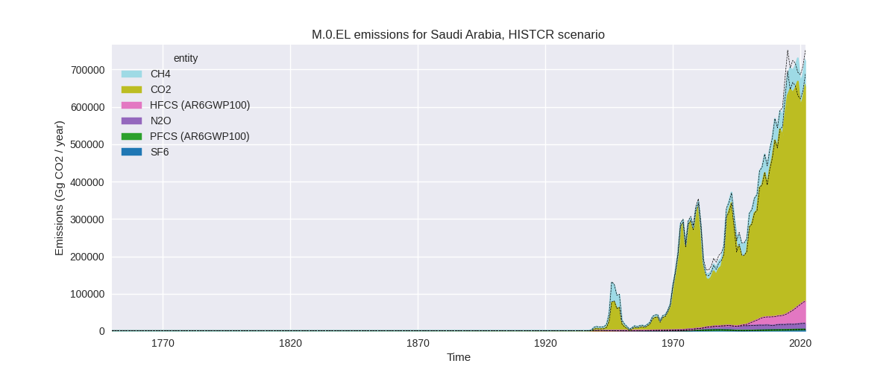
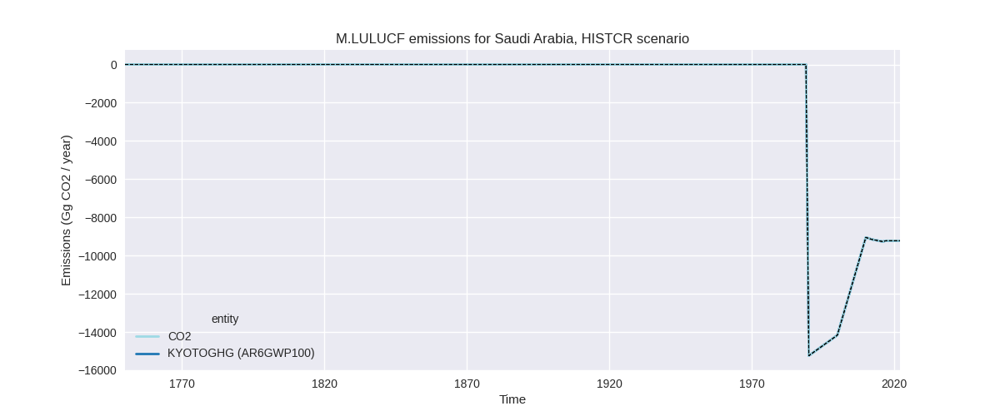
The following figures show the aggregate national total emissions excluding LULUCF AR6GWP100 for the third party priority scenario. The dotted linesshow the v2.5_final data.
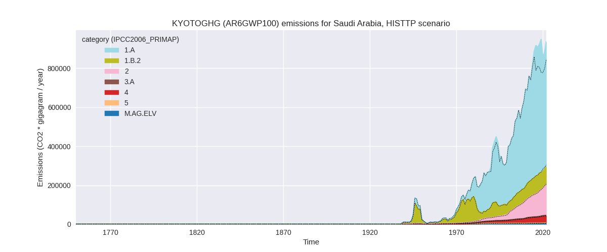
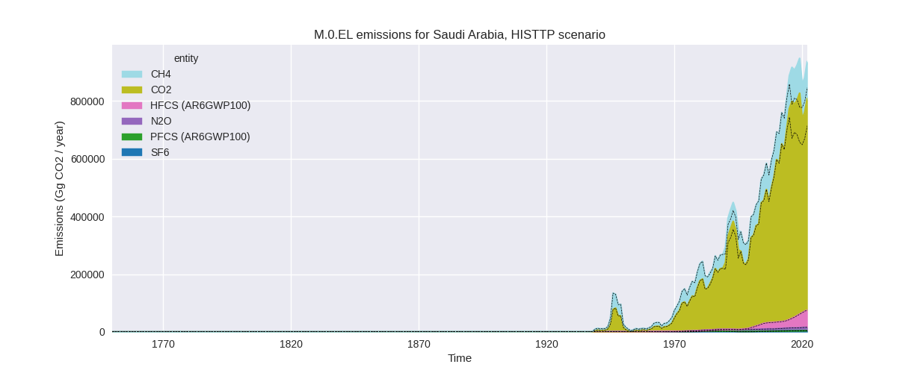
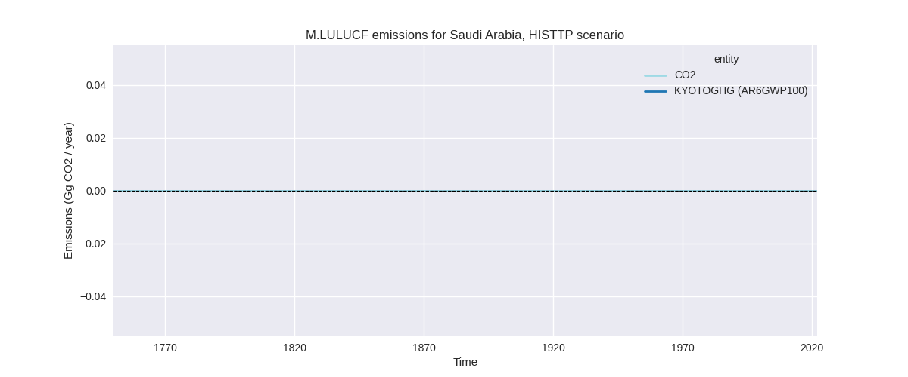
Overview over changes
In the country reported priority scenario we have the following changes for aggregate Kyoto GHG and national total emissions excluding LULUCF (M.0.EL):
- Emissions in 2022 have changed by -3.5%% (-26712.97 Gg CO2 / year)
- Emissions in 1990-2022 have changed by -1.4%% (-6748.93 Gg CO2 / year)
In the third party priority scenario we have the following changes for aggregate Kyoto GHG and national total emissions excluding LULUCF (M.0.EL):
- Emissions in 2022 have changed by 10.6%% (89686.36 Gg CO2 / year)
- Emissions in 1990-2022 have changed by 5.1%% (28786.66 Gg CO2 / year)
Most important changes per scenario and time frame
In the country reported priority scenario the following sector-gas combinations have the highest absolute impact on national total KyotoGHG (AR6GWP100) emissions in 2022 (top 5):
- 1: 1.A, CO2 with -22967.10 Gg CO2 / year (-4.4%)
- 2: 2, CO2 with -6696.02 Gg CO2 / year (-7.6%)
- 3: 1.B.2, CH4 with 3011.63 Gg CO2 / year (24.7%)
- 4: 3.A, N2O with 477.02 Gg CO2 / year (inf%)
- 5: 2, CH4 with -454.83 Gg CO2 / year (-12.6%)
In the country reported priority scenario the following sector-gas combinations have the highest absolute impact on national total KyotoGHG (AR6GWP100) emissions in 1990-2022 (top 5):
- 1: 1.A, CO2 with -6246.28 Gg CO2 / year (-1.8%)
- 2: 2, CO2 with -560.36 Gg CO2 / year (-1.4%)
- 3: M.AG.ELV, CO2 with 52.81 Gg CO2 / year (19.7%)
- 4: 3.A, N2O with 14.64 Gg CO2 / year (0.8%)
- 5: 2, N2O with -12.67 Gg CO2 / year (-1.2%)
In the third party priority scenario the following sector-gas combinations have the highest absolute impact on national total KyotoGHG (AR6GWP100) emissions in 2022 (top 5):
- 1: 1.A, CO2 with 98860.15 Gg CO2 / year (18.3%)
- 2: 2, CO2 with -4365.21 Gg CO2 / year (-4.6%)
- 3: 1.B.2, CH4 with -4245.50 Gg CO2 / year (-4.6%)
- 4: 4, CH4 with -553.92 Gg CO2 / year (-1.6%)
- 5: 5, N2O with -187.00 Gg CO2 / year (-5.5%)
In the third party priority scenario the following sector-gas combinations have the highest absolute impact on national total KyotoGHG (AR6GWP100) emissions in 1990-2022 (top 5):
- 1: 1.A, CO2 with 29970.25 Gg CO2 / year (7.6%)
- 2: 1.B.2, CH4 with -858.28 Gg CO2 / year (-1.3%)
- 3: 2, CO2 with -354.29 Gg CO2 / year (-0.7%)
- 4: M.AG.ELV, CO2 with 52.81 Gg CO2 / year (19.7%)
- 5: 4, CH4 with -16.79 Gg CO2 / year (-0.1%)
Notes on data changes
Here we list notes explaining important emissions changes for the country. ’' means that the following text only applies to the TP time series, while means that it only applies to the CR scenario. Otherwise the note applies to both scenarios.
- 1.A, CO2: Higher emissions in CDIAC 2023 starting in 2015 lead to higher emissions for the latest years in PRIMAP-hist. The year to year growth rates in CDIAC 2023 differ from the data used in PRIMAP-hist v2.5. Through harmonization to country reported data this leads to lower emissions in 2022 and lower cumulative emissions.
- 2, CO2: EDGAR emissions for 2.B (chemical industry) are lower for the latest years leading to lower IPPU emissions in PRIMAP-hist.
- 1.B.2, CH4: EDGAR 8.0 emissions are lower for the latest years leading to lower PRIMAP-hist emissions.
Changes by sector and gas
For each scenario and time frame the changes are displayed for all individual sectors and all individual gases. In the sector plot we use aggregate Kyoto GHGs in AR6GWP100. In the gas plot we usenational total emissions without LULUCF. ## country reported scenario
2022
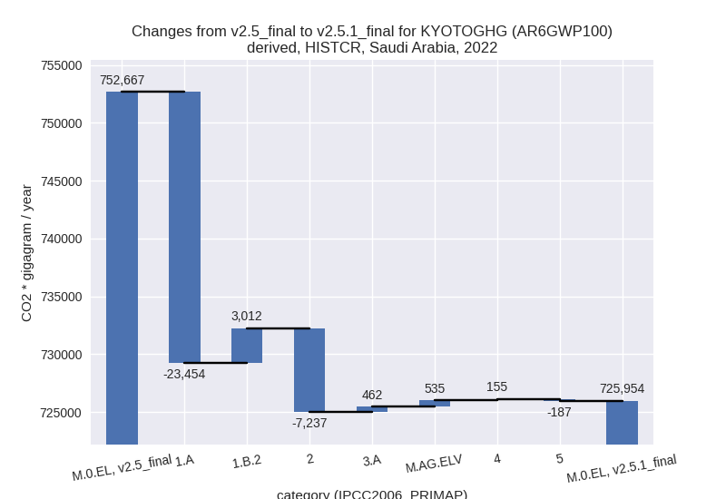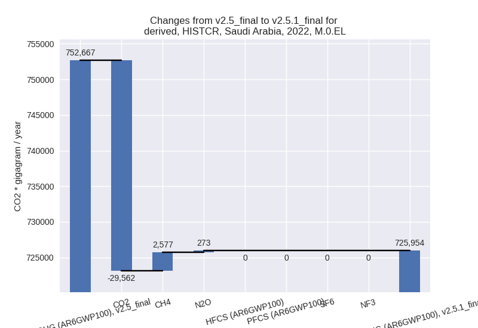
1990-2022
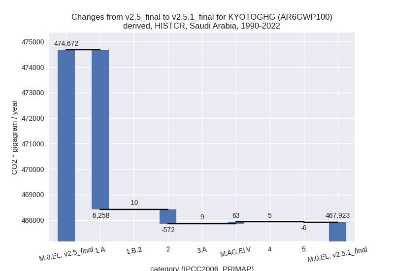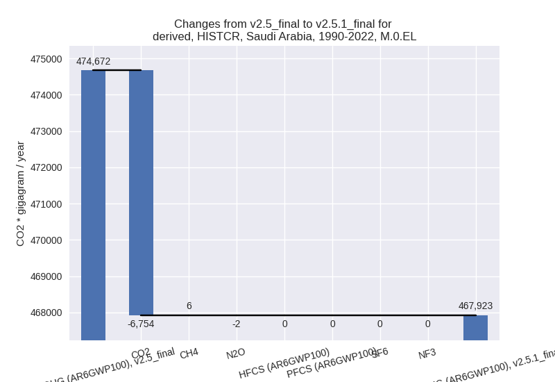
third party scenario
2022
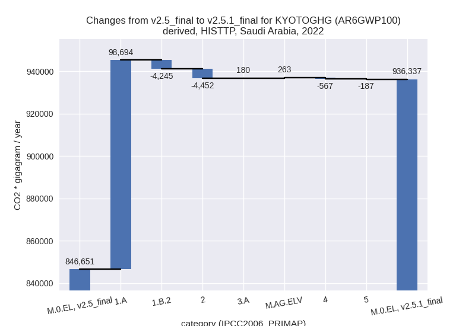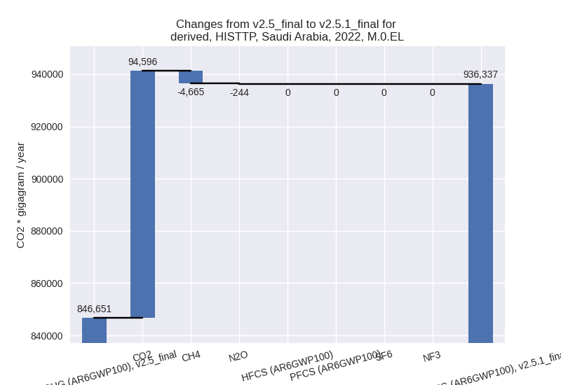
1990-2022
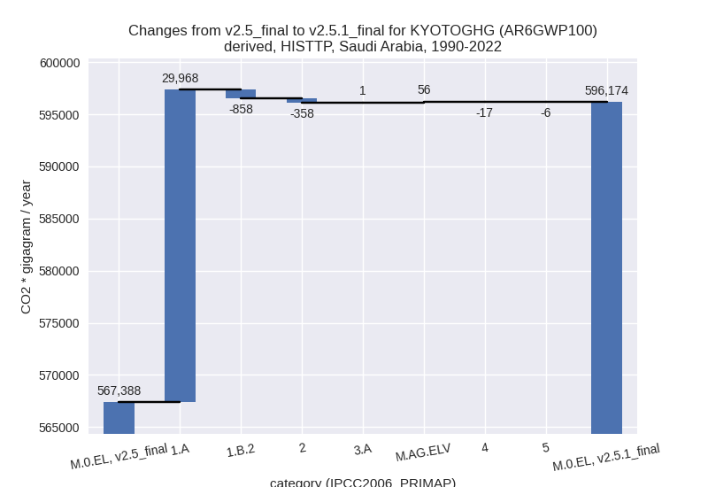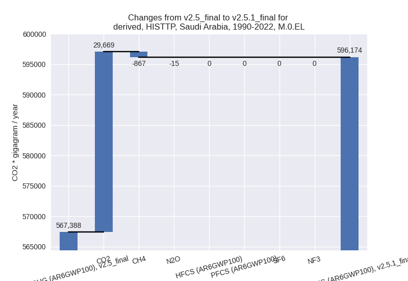
Detailed changes for the scenarios:
country reported scenario (HISTCR):
Most important changes per time frame
For 2022 the following sector-gas combinations have the highest absolute impact on national total KyotoGHG (AR6GWP100) emissions in 2022 (top 5):
- 1: 1.A, CO2 with -22967.10 Gg CO2 / year (-4.4%)
- 2: 2, CO2 with -6696.02 Gg CO2 / year (-7.6%)
- 3: 1.B.2, CH4 with 3011.63 Gg CO2 / year (24.7%)
- 4: 3.A, N2O with 477.02 Gg CO2 / year (inf%)
- 5: 2, CH4 with -454.83 Gg CO2 / year (-12.6%)
For 1990-2022 the following sector-gas combinations have the highest absolute impact on national total KyotoGHG (AR6GWP100) emissions in 1990-2022 (top 5):
- 1: 1.A, CO2 with -6246.28 Gg CO2 / year (-1.8%)
- 2: 2, CO2 with -560.36 Gg CO2 / year (-1.4%)
- 3: M.AG.ELV, CO2 with 52.81 Gg CO2 / year (19.7%)
- 4: 3.A, N2O with 14.64 Gg CO2 / year (0.8%)
- 5: 2, N2O with -12.67 Gg CO2 / year (-1.2%)
Changes in the main sectors for aggregate KyotoGHG (AR6GWP100) are
- 1: Total sectoral emissions in 2022 are 516536.18
Gg CO2 / year which is 71.2% of M.0.EL emissions. 2022 Emissions have
changed by -3.8% (-20441.99 Gg CO2 /
year). 1990-2022 Emissions have changed by -1.7% (-6248.39 Gg CO2 / year). For 2022
the changes per gas
are:
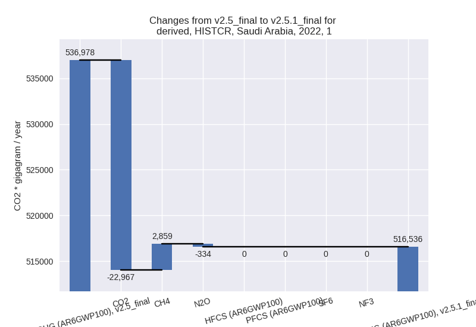
The changes come from the following subsectors:- 1.A: Total sectoral emissions in 2022 are 498840.50
Gg CO2 / year which is 96.6% of category 1 emissions. 2022 Emissions
have changed by -4.5% (-23454.30 Gg
CO2 / year). 1990-2022 Emissions have changed by -1.8% (-6258.13 Gg CO2 / year). For 2022
the changes per gas
are:
There is no subsector information available in PRIMAP-hist. - 1.B.2: Total sectoral emissions in 2022 are
17695.68 Gg CO2 / year which is 3.4% of category 1 emissions. 2022
Emissions have changed by 20.5%
(3012.31 Gg CO2 / year). 1990-2022 Emissions have changed by 0.0% (9.74 Gg CO2 / year). For 2022 the
changes per gas
are:
There is no subsector information available in PRIMAP-hist.
- 1.A: Total sectoral emissions in 2022 are 498840.50
Gg CO2 / year which is 96.6% of category 1 emissions. 2022 Emissions
have changed by -4.5% (-23454.30 Gg
CO2 / year). 1990-2022 Emissions have changed by -1.8% (-6258.13 Gg CO2 / year). For 2022
the changes per gas
are:
- 2: Total sectoral emissions in 2022 are 149895.49
Gg CO2 / year which is 20.6% of M.0.EL emissions. 2022 Emissions have
changed by -4.6% (-7236.68 Gg CO2 /
year). 1990-2022 Emissions have changed by -0.9% (-572.07 Gg CO2 / year). For 2022
the changes per gas
are:
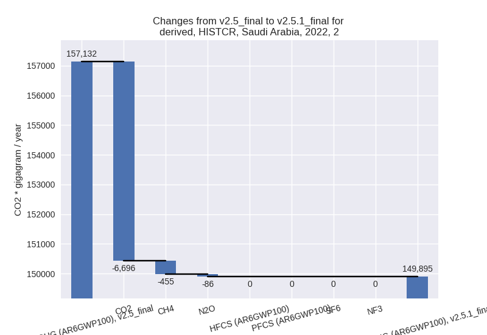 - M.AG: Total sectoral emissions in 2022 are 12551.66
Gg CO2 / year which is 1.7% of M.0.EL emissions. 2022 Emissions have
changed by 8.6% (997.21 Gg CO2 /
year). 1990-2022 Emissions have changed by 0.6% (72.48 Gg CO2 / year). For 2022 the
changes per gas
are:
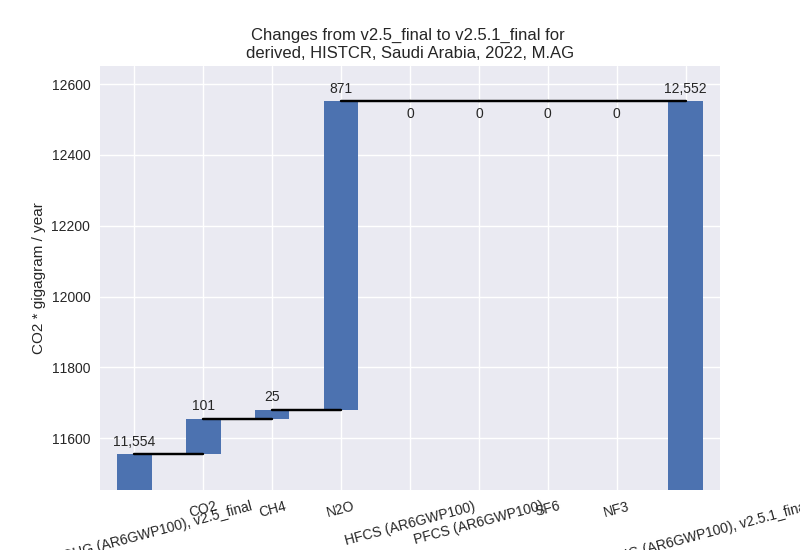
The changes come from the following subsectors:- 3.A: Total sectoral emissions in 2022 are 4921.10
Gg CO2 / year which is 39.2% of category M.AG emissions. 2022 Emissions
have changed by 10.4% (461.87 Gg CO2
/ year). 1990-2022 Emissions have changed by 0.2% (9.14 Gg CO2 / year). For 2022 the
changes per gas
are:
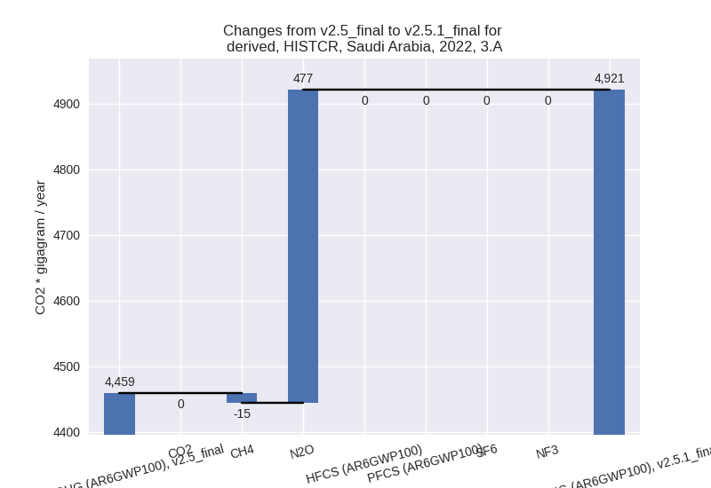
There is no subsector information available in PRIMAP-hist. - M.AG.ELV: Total sectoral emissions in 2022 are
7630.56 Gg CO2 / year which is 60.8% of category M.AG emissions. 2022
Emissions have changed by 7.5%
(535.34 Gg CO2 / year). 1990-2022 Emissions have changed by 0.9% (63.34 Gg CO2 / year). For 2022 the
changes per gas
are:
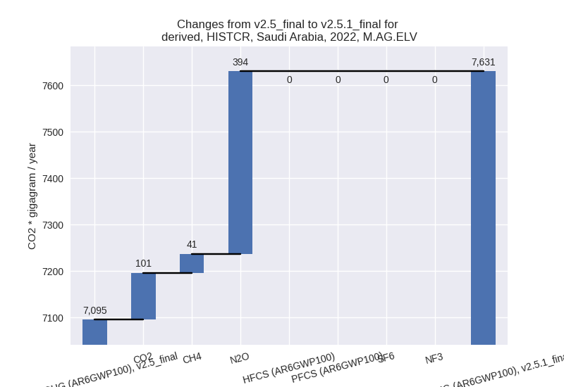
There is no subsector information available in PRIMAP-hist.
- 3.A: Total sectoral emissions in 2022 are 4921.10
Gg CO2 / year which is 39.2% of category M.AG emissions. 2022 Emissions
have changed by 10.4% (461.87 Gg CO2
/ year). 1990-2022 Emissions have changed by 0.2% (9.14 Gg CO2 / year). For 2022 the
changes per gas
are:
- 4: Total sectoral emissions in 2022 are 43787.02 Gg CO2 / year which is 6.0% of M.0.EL emissions. 2022 Emissions have changed by 0.4% (155.49 Gg CO2 / year). 1990-2022 Emissions have changed by 0.0% (4.71 Gg CO2 / year).
- 5: Total sectoral emissions in 2022 are 3183.73 Gg
CO2 / year which is 0.4% of M.0.EL emissions. 2022 Emissions have
changed by -5.5% (-187.00 Gg CO2 /
year). 1990-2022 Emissions have changed by -0.3% (-5.67 Gg CO2 / year). For 2022 the
changes per gas
are:

third party scenario (HISTTP):
Most important changes per time frame
For 2022 the following sector-gas combinations have the highest absolute impact on national total KyotoGHG (AR6GWP100) emissions in 2022 (top 5):
- 1: 1.A, CO2 with 98860.15 Gg CO2 / year (18.3%)
- 2: 2, CO2 with -4365.21 Gg CO2 / year (-4.6%)
- 3: 1.B.2, CH4 with -4245.50 Gg CO2 / year (-4.6%)
- 4: 4, CH4 with -553.92 Gg CO2 / year (-1.6%)
- 5: 5, N2O with -187.00 Gg CO2 / year (-5.5%)
For 1990-2022 the following sector-gas combinations have the highest absolute impact on national total KyotoGHG (AR6GWP100) emissions in 1990-2022 (top 5):
- 1: 1.A, CO2 with 29970.25 Gg CO2 / year (7.6%)
- 2: 1.B.2, CH4 with -858.28 Gg CO2 / year (-1.3%)
- 3: 2, CO2 with -354.29 Gg CO2 / year (-0.7%)
- 4: M.AG.ELV, CO2 with 52.81 Gg CO2 / year (19.7%)
- 5: 4, CH4 with -16.79 Gg CO2 / year (-0.1%)
Changes in the main sectors for aggregate KyotoGHG (AR6GWP100) are
- 1: Total sectoral emissions in 2022 are 734371.03
Gg CO2 / year which is 78.4% of M.0.EL emissions. 2022 Emissions have
changed by 14.8% (94448.90 Gg CO2 /
year). 1990-2022 Emissions have changed by 6.2% (29110.03 Gg CO2 / year). For 2022
the changes per gas
are:
For 1990-2022 the changes per gas are:
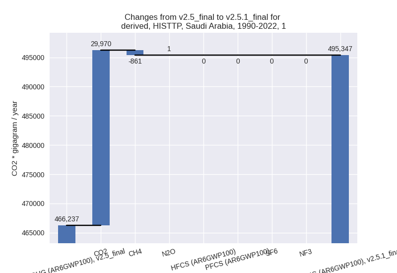
The changes come from the following subsectors:- 1.A: Total sectoral emissions in 2022 are 641133.50
Gg CO2 / year which is 87.3% of category 1 emissions. 2022 Emissions
have changed by 18.2% (98693.72 Gg
CO2 / year). 1990-2022 Emissions have changed by 7.6% (29968.46 Gg CO2 / year). For 2022
the changes per gas
are:
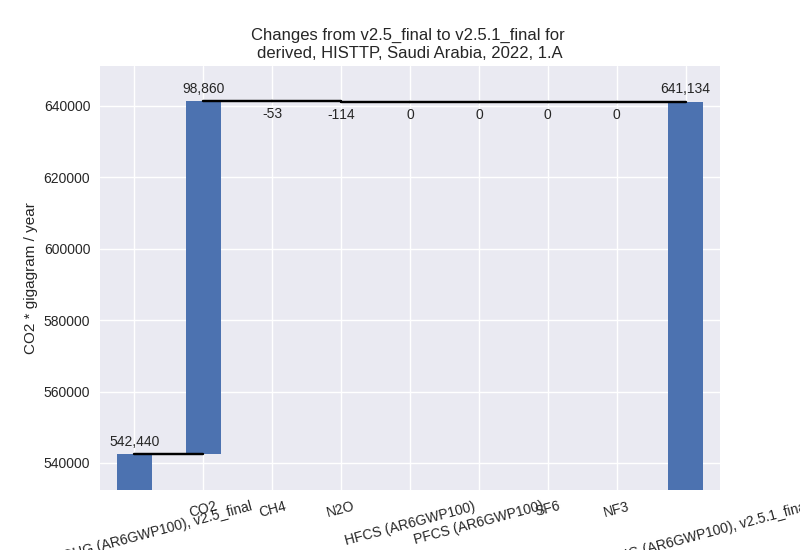
For 1990-2022 the changes per gas are:
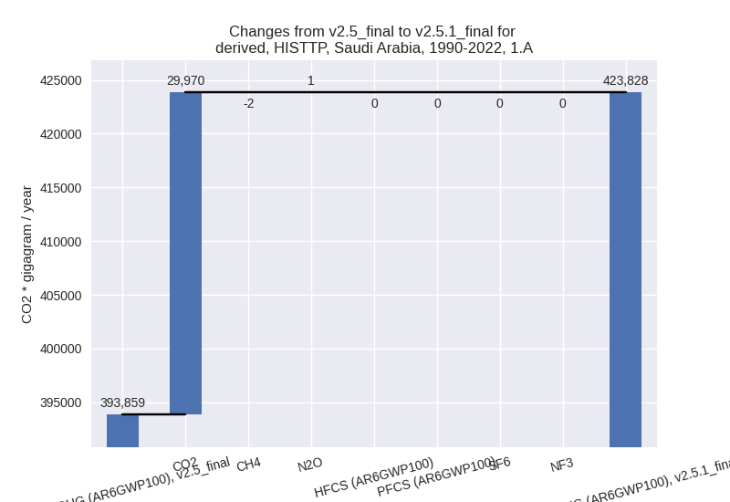
There is no subsector information available in PRIMAP-hist. - 1.B.2: Total sectoral emissions in 2022 are
93237.53 Gg CO2 / year which is 12.7% of category 1 emissions. 2022
Emissions have changed by -4.4%
(-4244.82 Gg CO2 / year). 1990-2022 Emissions have changed by -1.2% (-858.44 Gg CO2 / year). For 2022
the changes per gas
are:
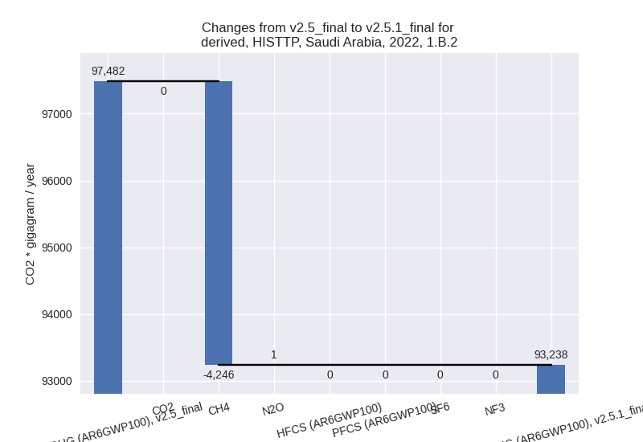
There is no subsector information available in PRIMAP-hist.
- 1.A: Total sectoral emissions in 2022 are 641133.50
Gg CO2 / year which is 87.3% of category 1 emissions. 2022 Emissions
have changed by 18.2% (98693.72 Gg
CO2 / year). 1990-2022 Emissions have changed by 7.6% (29968.46 Gg CO2 / year). For 2022
the changes per gas
are:
- 2: Total sectoral emissions in 2022 are 156248.13
Gg CO2 / year which is 16.7% of M.0.EL emissions. 2022 Emissions have
changed by -2.8% (-4452.19 Gg CO2 /
year). 1990-2022 Emissions have changed by -0.5% (-358.02 Gg CO2 / year). For 2022
the changes per gas
are:
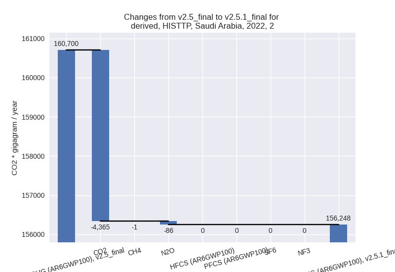 - M.AG: Total sectoral emissions in 2022 are 7917.59
Gg CO2 / year which is 0.8% of M.0.EL emissions. 2022 Emissions have
changed by 5.9% (443.67 Gg CO2 /
year). 1990-2022 Emissions have changed by 0.9% (57.50 Gg CO2 / year). For 2022 the
changes per gas
are:
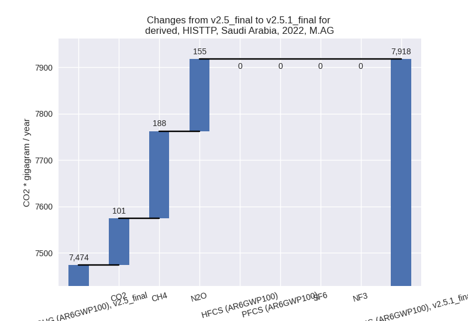
The changes come from the following subsectors:- 3.A: Total sectoral emissions in 2022 are 3956.63
Gg CO2 / year which is 50.0% of category M.AG emissions. 2022 Emissions
have changed by 4.8% (180.24 Gg CO2
/ year). 1990-2022 Emissions have changed by 0.0% (1.14 Gg CO2 / year). For 2022 the
changes per gas
are:
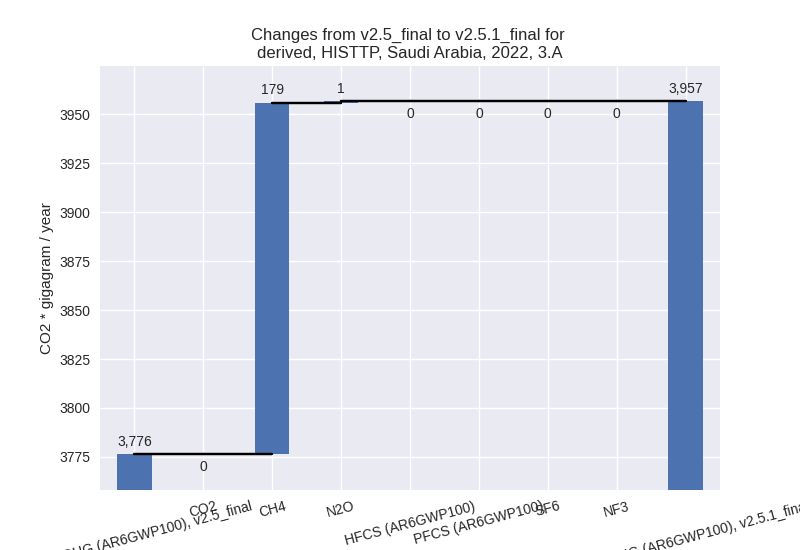
There is no subsector information available in PRIMAP-hist. - M.AG.ELV: Total sectoral emissions in 2022 are
3960.96 Gg CO2 / year which is 50.0% of category M.AG emissions. 2022
Emissions have changed by 7.1%
(263.43 Gg CO2 / year). 1990-2022 Emissions have changed by 1.7% (56.36 Gg CO2 / year). For 2022 the
changes per gas
are:
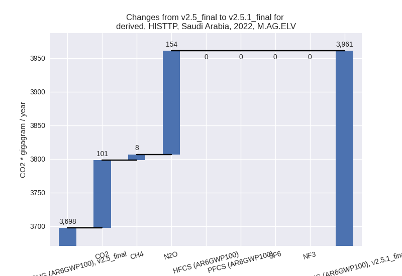
There is no subsector information available in PRIMAP-hist.
- 3.A: Total sectoral emissions in 2022 are 3956.63
Gg CO2 / year which is 50.0% of category M.AG emissions. 2022 Emissions
have changed by 4.8% (180.24 Gg CO2
/ year). 1990-2022 Emissions have changed by 0.0% (1.14 Gg CO2 / year). For 2022 the
changes per gas
are:
- 4: Total sectoral emissions in 2022 are 34616.86 Gg CO2 / year which is 3.7% of M.0.EL emissions. 2022 Emissions have changed by -1.6% (-567.02 Gg CO2 / year). 1990-2022 Emissions have changed by -0.1% (-17.18 Gg CO2 / year).
- 5: Total sectoral emissions in 2022 are 3183.73 Gg
CO2 / year which is 0.3% of M.0.EL emissions. 2022 Emissions have
changed by -5.5% (-187.00 Gg CO2 /
year). 1990-2022 Emissions have changed by -0.3% (-5.67 Gg CO2 / year). For 2022 the
changes per gas
are:
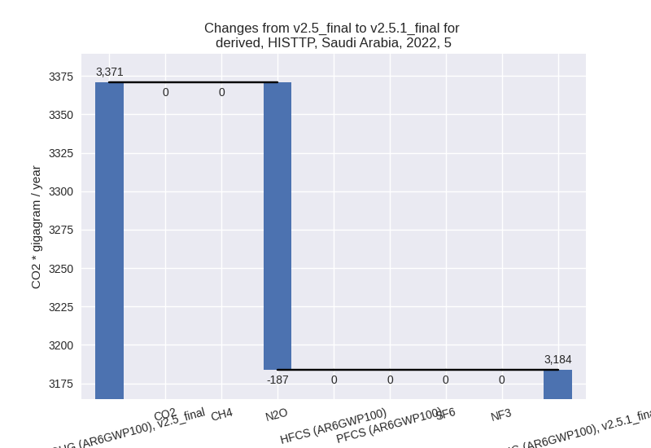